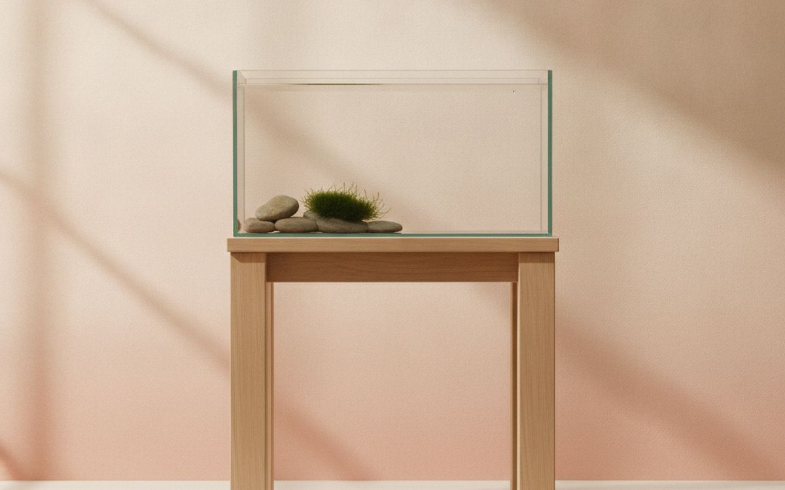
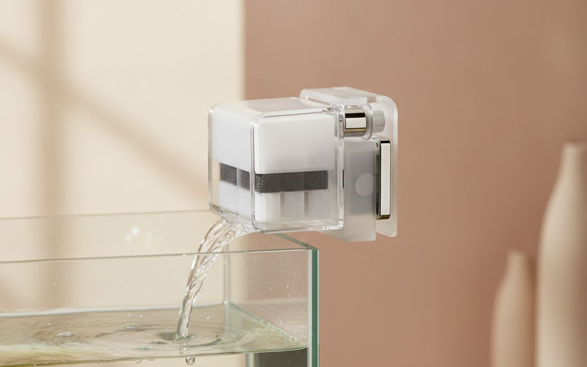
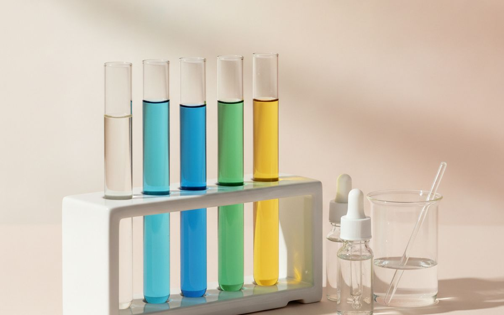
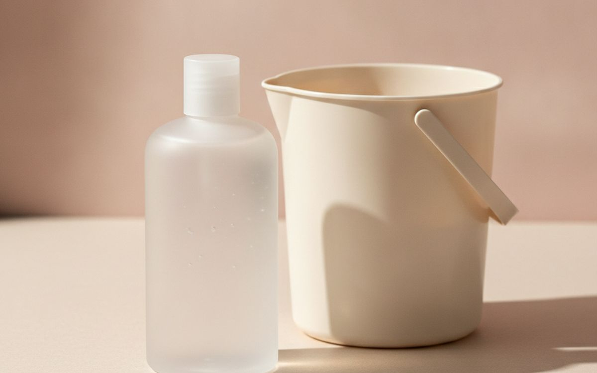
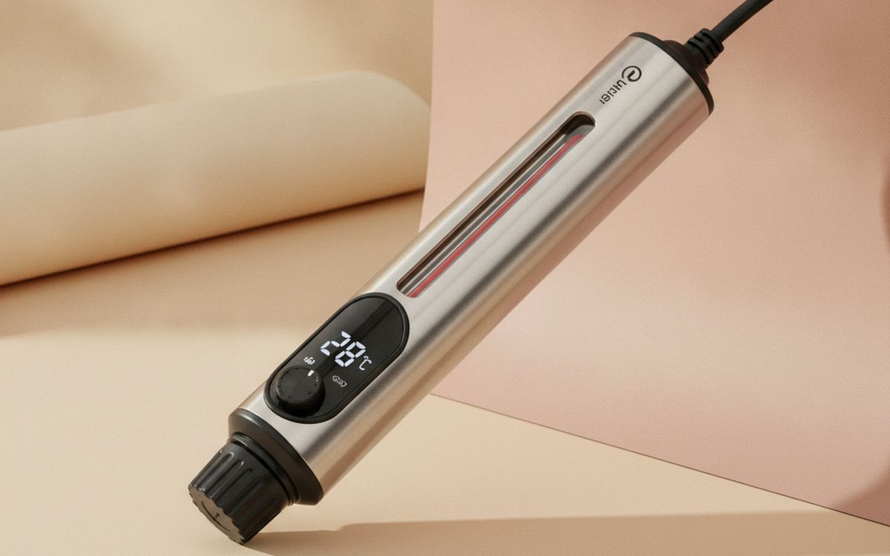
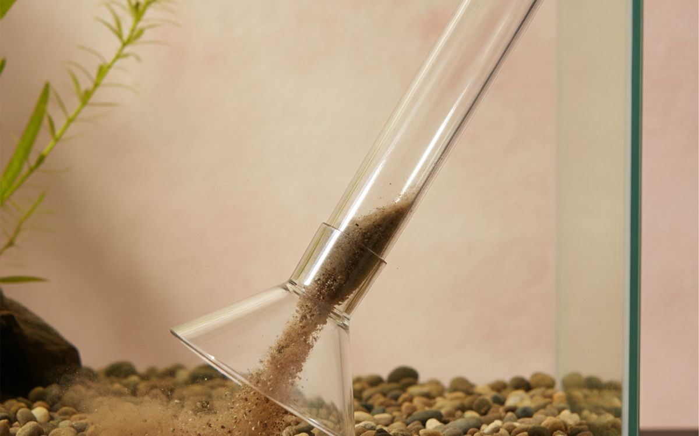
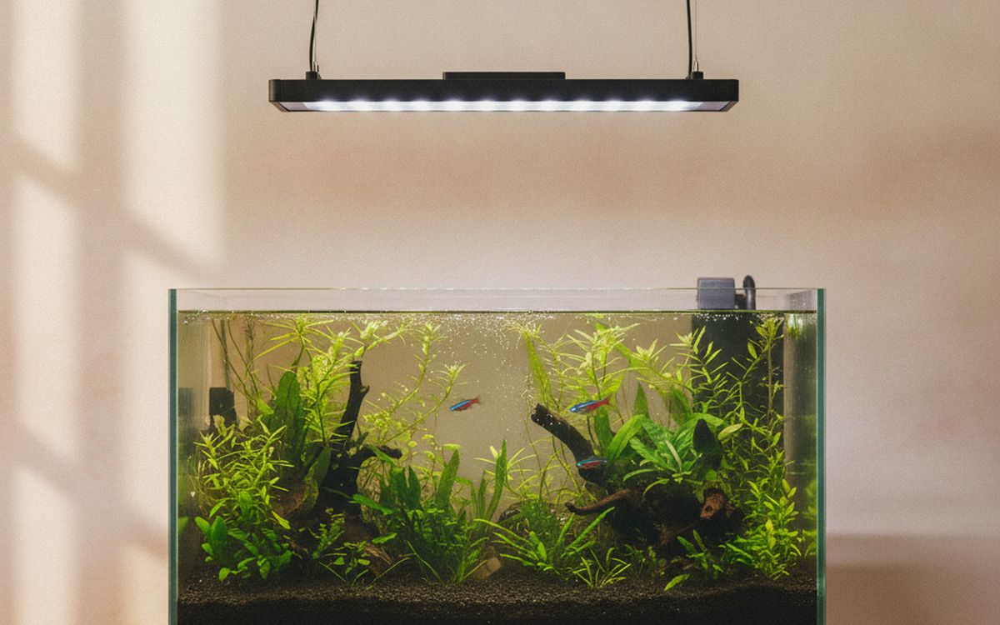
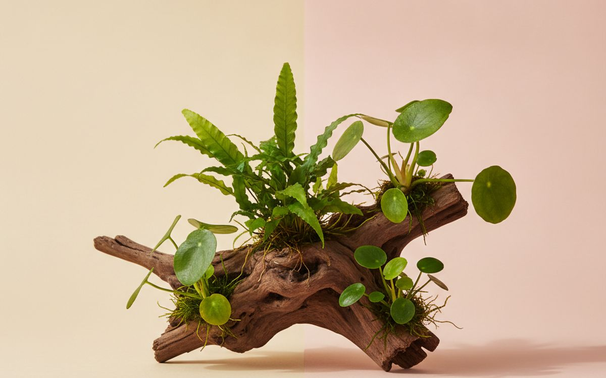
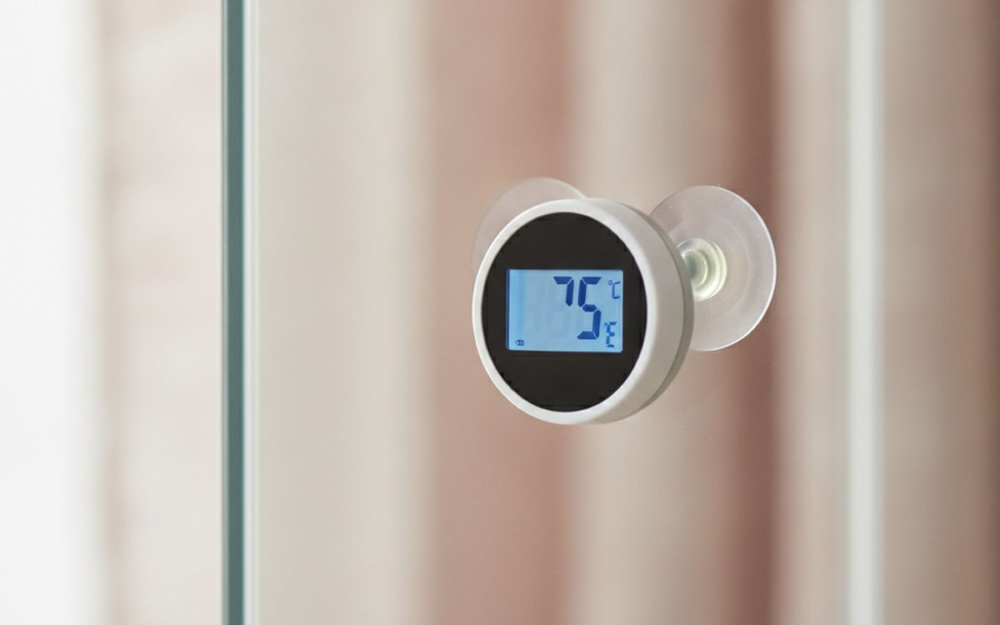
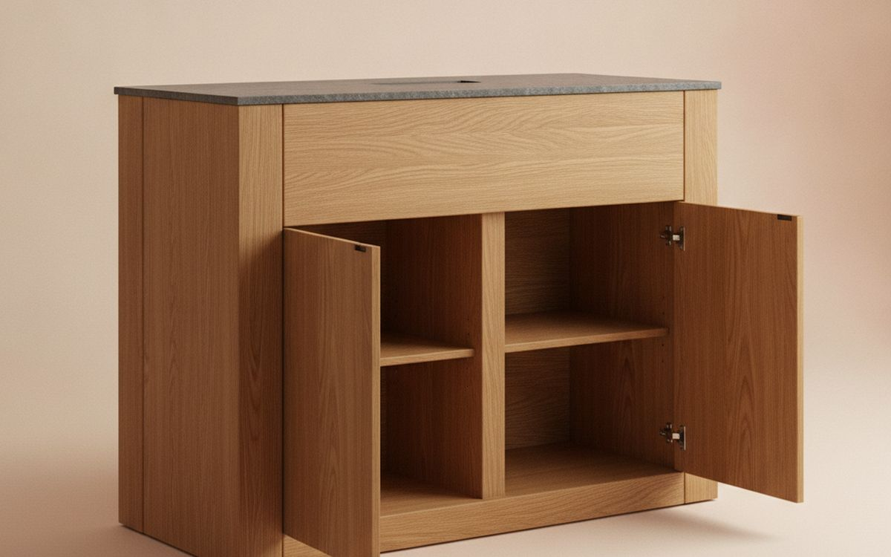

Most first aquariums fail in the first month. The story is always similar: a small tank bought with fish on the same day, too many fish added at once, and water that turns toxic before the helpful bacteria have time to grow. The fish die, the water goes cloudy, and the tank ends up in a cupboard.
This list is ordered by what prevents that. The right size tank, a good filter and a water test kit matter far more than decorations. And the most important thing on the list is free: patience while the tank cycles.
Prices below are approximate street prices at the time of writing and move around constantly, especially during sale events. Treat them as a rough band for budgeting, not a quote. Always check the live listing before you buy.
En resumen
A 20-gallon tank
The size that makes it easier
Aviso. Los enlaces de esta página son de afiliados. Si compras a través de uno podemos ganar una comisión sin coste adicional para ti. No influye en qué entra en esta lista ni en su orden.
Cómo lo elegimos
These picks come from aquarium hobbyist communities, fish care guidance and long-run owner reports, cross-checked against current retail listings. We have not personally tested every item here. Glass tanks are expensive and fragile to ship, so check delivery costs and damage policies before ordering.
De un vistazo
Los precios son aproximados en el momento de escribir y cambian a menudo.
Las recomendaciones

01 · The size that makes it easierA 20-gallon tank
Small tanks and bowls feel beginner-friendly but are the hardest to keep stable. In a small volume, waste builds up fast and temperature swings quickly. A 20-gallon tank is large enough to be forgiving and small enough for most homes. Choose a long shape for more swimming space. Starter kits bundle a filter and light, but check what is included. The case for it: more stable water, room for a good community of fish, and forgiving of mistakes. The trade-off is real: a full tank weighs over 200 pounds and glass is costly to ship, so weigh that against how often it would actually get used.
$60-150Lo que aceptas: A full tank weighs over 200 pounds
Por qué está aquí
- More stable water
- Room for a good community of fish
- Forgiving of mistakes
Conviene saber
- A full tank weighs over 200 pounds
- Glass is costly to ship

02 · Clean, healthy waterA hang-on-back or sponge filter
The filter does more than clean the water. It is home to the beneficial bacteria that turn toxic fish waste into safer compounds. A hang-on-back filter rated for your tank size, or a bit larger, is simple and effective. Sponge filters are cheap, gentle and great for shrimp and small fish. Never rinse filter media under tap water; rinse it in old tank water so the bacteria survive. The case for it: keeps water clean and safe, houses beneficial bacteria, and easy to maintain. The trade-off is real: filters hum a little and tap water rinses kill the bacteria, so weigh that against how often it would actually get used.
$20-50Lo que aceptas: Filters hum a little
Por qué está aquí
- Keeps water clean and safe
- Houses beneficial bacteria
- Easy to maintain
Conviene saber
- Filters hum a little
- Tap water rinses kill the bacteria

03 · Knowing the water is safeA liquid water test kit
You cannot see ammonia or nitrite, and both kill fish. A liquid test kit, such as the API Freshwater Master Kit, measures them along with nitrate and pH. It tells you when a new tank has finished cycling and when something is wrong. Liquid kits are more accurate than strips and last for hundreds of tests. The case for it: shows invisible dangers, tells you when the tank is ready for fish, and lasts a long time. The trade-off is real: testing takes a few minutes and reagents expire; check dates, so weigh that against how often it would actually get used.
$25-40Lo que aceptas: Testing takes a few minutes
Por qué está aquí
- Shows invisible dangers
- Tells you when the tank is ready for fish
- Lasts a long time
Conviene saber
- Testing takes a few minutes
- Reagents expire; check dates

04 · Making tap water safeWater conditioner
Tap water contains chlorine or chloramine, which kills fish and filter bacteria. A water conditioner removes them instantly. Add it to every bucket of new water. A bottle lasts a long time, and concentrated products like Seachem Prime are very economical. The case for it: makes tap water safe instantly, protects fish and bacteria, and cheap. The trade-off is real: must be used every water change and measure the dose; do not guess, so weigh that against how often it would actually get used. At $8-15, it earns its place on this list without asking for a big up-front commitment either way.
$8-15Lo que aceptas: Must be used every water change
Por qué está aquí
- Makes tap water safe instantly
- Protects fish and bacteria
- Cheap
Conviene saber
- Must be used every water change
- Measure the dose; do not guess

05 · Tropical fishAn adjustable heater
Most popular community fish are tropical and need steady warm water, usually around 76-80°F. An adjustable heater keeps it constant. For a 20-gallon tank, 100 watts is typical. Buy a reliable brand; a heater stuck on can cook a tank. The case for it: steady temperature for tropical fish, adjustable, and low running cost. The trade-off is real: cheap heaters can fail stuck on and unplug before water changes, so weigh that against how often it would actually get used. For $20-35, it is a small, low-risk addition to the list rather than a centrepiece purchase you need to think hard about.
$20-35Lo que aceptas: Cheap heaters can fail stuck on
Por qué está aquí
- Steady temperature for tropical fish
- Adjustable
- Low running cost
Conviene saber
- Cheap heaters can fail stuck on
- Unplug before water changes

06 · Easy water changesA gravel vacuum siphon
Weekly partial water changes of around 20-25 percent keep fish healthy. A gravel vacuum siphons water and pulls waste out of the gravel at the same time. Squeeze-start types avoid mouth siphoning. It makes a chore into a ten-minute job. The case for it: cleans gravel and changes water at once, quick, and cheap. The trade-off is real: needs a bucket and can suck up small fish if careless, so weigh that against how often it would actually get used. Priced around $12-25, it is easy to justify even if it only ends up getting occasional rather than daily use.
$12-25Lo que aceptas: Needs a bucket
Por qué está aquí
- Cleans gravel and changes water at once
- Quick
- Cheap
Conviene saber
- Needs a bucket
- Can suck up small fish if careless

07 · Plants and viewingAn LED light with a timer
Fish need a regular day and night cycle, and plants need light. An LED light with a built-in timer gives 8-10 hours a day. Too many hours cause algae. Place the tank away from direct sunlight for the same reason. The case for it: regular light cycle, grows plants, and shows off fish. The trade-off is real: too long a photoperiod grows algae and cheap lights may not suit plants, so weigh that against how often it would actually get used. At $25-60, it earns its place on this list without asking for a big up-front commitment either way.
$25-60Lo que aceptas: Too long a photoperiod grows algae
Por qué está aquí
- Regular light cycle
- Grows plants
- Shows off fish
Conviene saber
- Too long a photoperiod grows algae
- Cheap lights may not suit plants

08 · Water quality and looksEasy live plants
Live plants absorb waste and compete with algae, and they look much better than plastic. Easy plants like java fern, anubias and java moss need little light and no special soil. Tie them to rocks or wood. Check local rules; some aquarium plants cannot be shipped to some states. The case for it: improve water quality, reduce algae, and look natural. The trade-off is real: some fish eat plants and can carry snails in, so weigh that against how often it would actually get used. For $15-30, it is a small, low-risk addition to the list rather than a centrepiece purchase you need to think hard about.
$15-30Lo que aceptas: Some fish eat plants
Por qué está aquí
- Improve water quality
- Reduce algae
- Look natural
Conviene saber
- Some fish eat plants
- Can carry snails in

09 · Checking the temperatureA thermometer
A heater's dial is not accurate. A cheap digital or stick-on thermometer lets you check the actual temperature at a glance. It is also your early warning if a heater fails. The case for it: checks the heater is working, cheap, and easy to read. The trade-off is real: stick-on types are less accurate and batteries needed on digital types, so weigh that against how often it would actually get used. Priced around $5-10, it is easy to justify even if it only ends up getting occasional rather than daily use. None of that makes it essential for everyone reading this, only worth knowing about if the description above matches how you actually use the space.
$5-10Lo que aceptas: Stick-on types are less accurate
Por qué está aquí
- Checks the heater is working
- Cheap
- Easy to read
Conviene saber
- Stick-on types are less accurate
- Batteries needed on digital types

10 · Supporting the weightA tank stand
Water weighs about 8 pounds per gallon, so a 20-gallon tank weighs over 200 pounds with gravel and rock. Most furniture is not built for that. A stand designed for aquariums supports the weight evenly and often has storage for supplies. Place it on a level floor. The case for it: supports the weight safely, storage for supplies, and right height for viewing. The trade-off is real: bulky to ship and must be level, so weigh that against how often it would actually get used. At $60-150, it earns its place on this list without asking for a big up-front commitment either way.
$60-150Lo que aceptas: Bulky to ship
Por qué está aquí
- Supports the weight safely
- Storage for supplies
- Right height for viewing
Conviene saber
- Bulky to ship
- Must be level
Preguntas frecuentes
What is tank cycling?
Growing beneficial bacteria in the filter before adding fish. It usually takes four to six weeks. Test the water to know when it is done.
What size tank is best for beginners?
Around 20 gallons. Bigger tanks are more stable and forgiving.
How often should I change the water?
About 20-25 percent weekly for most tanks.
What fish are good for beginners?
Hardy community fish like platies, corydoras and some tetras, added a few at a time after cycling.
Ofertas de hoy
Mira qué está rebajado ahora mismo.
Ofertas →← Todas las guías
Como afiliados de AliExpress, ganamos por las compras que cumplen los requisitos. Los precios y la disponibilidad son correctos en la fecha de publicación y pueden cambiar.